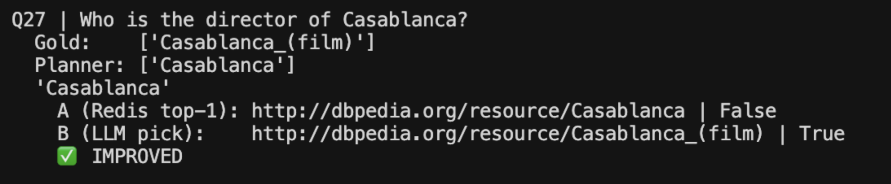
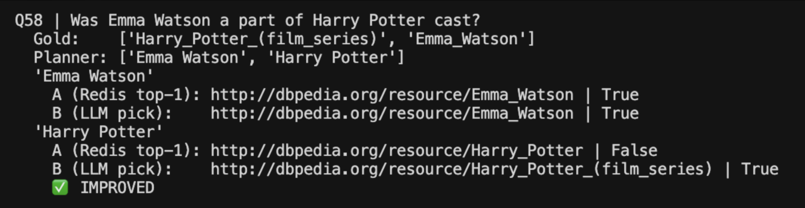
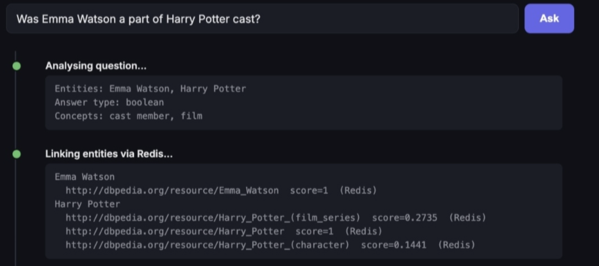

Coding Week 2
June 1 to June 7, 2026
Week 1 ended with a clear plan: build the Redis + LLM reasoning approach, evaluate it properly on DB25, and integrate it into the production codebase. This week was about executing that plan, and it turned out to be slightly more challenging than I expected.
Isolated Testing First
Before touching any production code in agentic-kgqa, I set up a completely separate development folder on my local machine. The reasoning was straightforward. If I made changes directly to the main codebase and something broke, it would be hard to tell whether the break was from my logic or from some interaction with existing pipeline. Testing in isolation first meant I could validate the approach independently before integrating it.
The isolation folder had two scripts. The first replicated the already existing agentic-kgqa baseline exactly: entity mentions are extracted from the raw question using LLM, then query Redis, and check if the correct entity comes back at rank 1. The second was the new approach: use a Planner LLM to extract entity mentions from the raw question, then run Redis top-k retrieval, then have an LLM reason over the candidates using the original question as context. The LLM reasoning over the candidates is the primary differentiation.
The Challenge with Qwen (in Isolated Testing)
My first instinct was to test with Qwen 3.5 122B in the isolated environment since it was already configured in the repo. The problem showed up immediately in the isolation scripts.
Qwen's thinking mode returns the final answer through a different API response field than standard models. The main content field comes back as None in the isolation environment, which caused an AttributeError. I added a None check and disabled thinking mode using extra_body={"thinking": False}, which fixed the crash. But even after that fix, Qwen was too conservative for strict JSON entity extraction in this isolated setup. It evaluated only 55 out of 103 entity mentions, skipping roughly half. The net gain was zero.
Switching to DeepSeek V3.2 fixed the extraction problem entirely. DeepSeek evaluated all 103 mentions and followed the extraction instructions precisely. One behaviour I noticed was that DeepSeek extracts "NYC" as written, while other models tend to expand it to "New York City" automatically. This precision turned out to matter because Redis does the lookup based on the exact surface form the Planner extracts. DeepSeek was confirmed as one of the better models for the entity linker node.
Approach A vs Approach B
With DeepSeek in place, I ran the full evaluation comparing two approaches across all 103 entity mentions.
Approach A was Redis top-1 with Planner extraction (the existing baseline strategy): take whatever entity Redis ranks first and use it. Approach B was Redis + LLM reasoning (new strategy): retrieve top-5 candidates and ask the LLM to pick the correct one based on the question context.
The disambiguation improvement showed up clearly on ambiguous names. For "Who is the director of Casablanca?", Redis top-1 returns the city of Casablanca because it has a higher surface form frequency than the film. The LLM sees the question mentions a director, understands this is about a film, and correctly picks Casablanca_(film) which was ranked 2 in Redis.

The Harry Potter case was the most interesting. For "Was Emma Watson a part of Harry Potter cast?", Redis top-1 returns Harry_Potter with a perfect score of 1.0. Harry_Potter_(film_series) appears further down the list with only 0.2735. The LLM sees the word "cast" in the question and moves the film series to the front.

Final results across 103 entity mentions:
- Approach A (Redis top-1 with Planner extraction): 94/103 correct (91.3%)
- Approach B (Redis + LLM reasoning): 96/103 correct (93.2%)
- Net gain: +2, zero degradation
The +2 with zero degradation was the target. LLM reasoning fixed the ambiguous cases without breaking anything that was already working.
Dropping FAISS for Entity Linking
My original proposal had FAISS as a semantic fallback for cases where Redis returns nothing. After running the evaluations, I looked carefully at the remaining failures. The Dark Knight, General (United States), and similar cases all had the same problem: the correct entity simply does not appear in Redis's top-20 results regardless of how high you set k. That is a coverage gap, not a ranking problem. FAISS over surface form embeddings would not help because the coverage gap exists at the data level, not the ranking level.
I brought this up with my mentor in our weekly meeting and he confirmed the same reasoning. He also pointed out that FAISS would be much more useful in the Ontology Explorer node instead, where you need semantic search over DBpedia predicates rather than entity names. My mentors have shared with me the full DBpedia OWL ontology file to help me get started in Week 3.
Integrating into Production
Once the approach was validated in isolation, I integrated it into src/agent.py. The changes were surgical by design. I added a DISAMBIGUATION_PROMPT constant copied directly from the isolation test, added a _disambiguate_entity() method to the KGQAAgent class, changed the Redis lookup from top-3 to top-5 candidates, and updated _link_entities() to accept the original question and call disambiguation when multiple candidates are returned.
One thing I got wrong initially was hardcoding the model for the disambiguation step. I added a DISAMBIGUATION_MODEL = "deepseek/deepseek-v3.2" constant at first, which the existing agentic-kgqa project code style does not do. Every other method in the codebase uses model or DEFAULT_MODEL so whatever the user selects in the UI flows through the entire pipeline. I removed the hardcoded constant and followed the same pattern.
There was also a bug I caught during testing: I was not passing the model parameter down through _link_entities() into _disambiguate_entity(). The disambiguation was defaulting to DEFAULT_MODEL (Gemini Flash) instead of whatever the user had selected, which meant DeepSeek-selected disambiguation was not actually using DeepSeek. One extra parameter fixed it.
After integration I tested with the live pipeline. Harry Potter now resolves to Harry_Potter_(film_series) when the question context contains words like "cast" or "actor".

An interesting observation from testing different models: Claude Sonnet 4.6 is better at picking the correct predicate downstream (choosing dbo:starring over dbp:starring), while DeepSeek is more precise at entity extraction. These are different nodes in the pipeline doing different things, and the model that works best for one step is not necessarily the best for another.
The new modified entity linking phase is now fully functional, which is the Week 2 goal.
What's Next
Week 3 is focused on the Ontology Explorer and the Schema Introspector node. The Planner already extracts a relationship from the question such as "birthplace" or "cast member". The Ontology Explorer will take that relationship and search semantically over the DBpedia ontology to find the most relevant predicates like dbo:birthPlace. The Schema Introspector will then enrich those predicate candidates with rdfs:domain and rdfs:range metadata from the OWL ontology. This precise structural information will then get passed to the Query Builder. The goal is to give the Query Builder precise, grounded options rather than having it reason from scratch over the entire ontology.